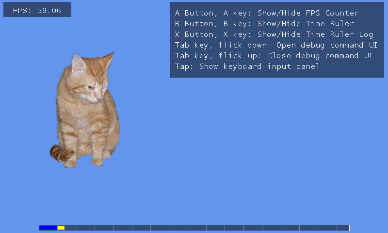

Performance Utility
Ported from Microsoft's XNA 4.0 Performance Utility sample for Windows.
Source for this sample on GitHub ↗
🟡 Partially implemented on the web. The local profiling tools and command console work. The original remote command cannot connect yet: browser account sign-in and SystemLink discovery, joining and relay support are unfinished in CNA.

Play local utility ▸Opens in a new tab. Focus the game, press A, B or X to show the counters, and Tab to open the command console.
About this sample
This utility demonstrates reusable debug tools: an FPS counter, a nested timing ruler and log, and a command console with help, history and commands. Its demonstration scene draws a cat; the pos command moves it.
The original Windows product also includes a SystemLink remote-command client, with the host in the Xbox branch. The command and protocol remain in this port, but the browser cannot use that network feature yet. The initial “Please signed in.” message is not a successful connection.
Controls
| Action | Control |
|---|---|
| Show or hide FPS | A key / gamepad A |
| Show or hide timing ruler | B key / gamepad B |
| Show or hide timing log | X key / gamepad X |
| Open or close command console | Tab |
| Move the cat | Enter pos 300 200 in the console |
| Read position / list commands | pos / help |
| Stop the sample | Escape / gamepad Back, or close the tab |
What remains for web networking
- Shared browser account authentication and deployment support.
- Public SystemLink session discovery and joining with a reachable host.
- A browser-capable realtime transport or relay, followed by real client/host command and reply tests.
After CNA's shared network layer is ready, this sample must be rebuilt and tested with genuine signed-in peers. The full completion checklist and implementation locations are in diff.md and CNA's browser network readiness record.